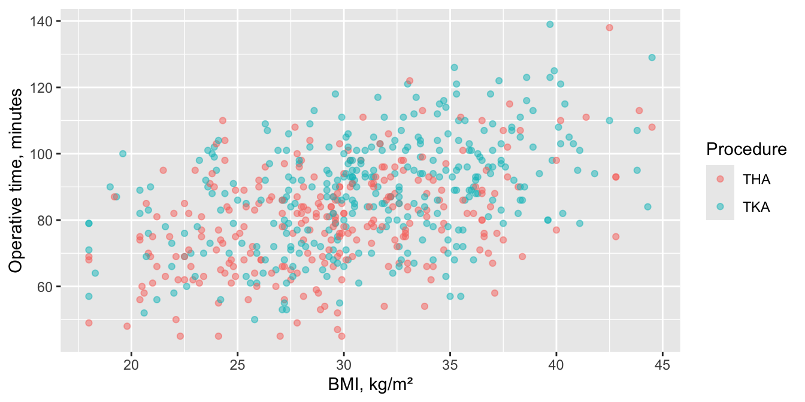
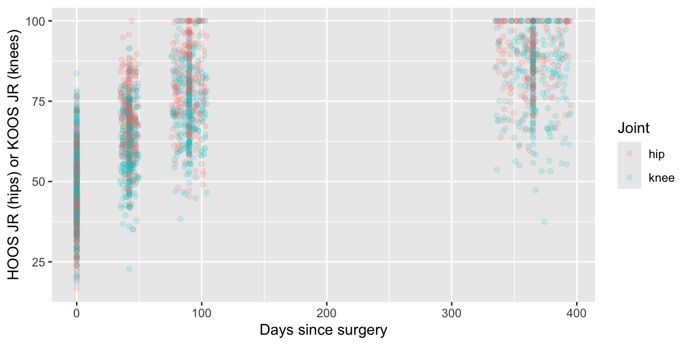
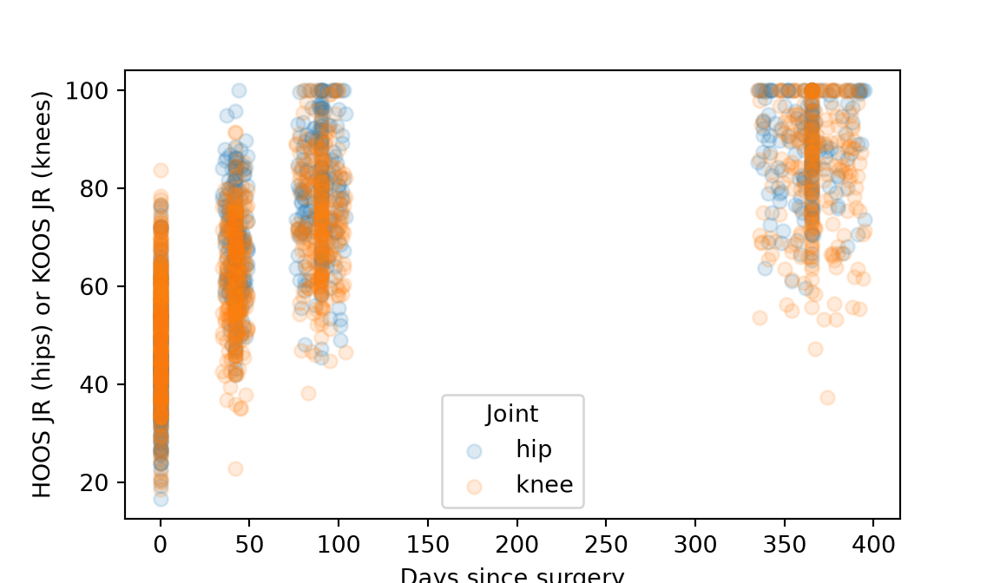

12 · Prédire une valeur à partir de plusieurs variables
Régression linéaire et non linéaire multiple, régression logistique multiple et régression de Cox : l’effet de chaque prédicteur, ajusté sur les autres.
Un critère de jugement dépend rarement d’une seule chose. L’opération de patients plus lourds dure peut-être plus longtemps, mais celle de patients plus âgés aussi, et les genoux prennent plus de temps que les hanches. La régression multiple met plusieurs prédicteurs dans un seul modèle : chaque coefficient est donc l’effet de ce prédicteur les autres étant maintenus constants, c’est-à-dire ajusté sur eux. Ce sont les quatre mêmes régressions que celles de la page 11, avec plus d’un prédicteur.
Note💡 Comment fonctionne chaque section de cette page
Chaque section répond à une question sur l’un des jeux de données d’exercice : la cohorte de prothèses articulaires et les PROM (mesures des résultats rapportés par le patient), et les reconstructions du ligament croisé antérieur (LCA) pour la régression logistique. Son premier bloc de code charge les packages et les données : vous pouvez donc aller directement à la section dont vous avez besoin. Exécutez les blocs de cette section dans l’ordre, de haut en bas.
Pour garder le code court, les exemples de prothèses articulaires utilisent tous les cas, y compris les 80 patients opérés des deux côtés. Dans une vraie étude, décidez comment les traiter (page 3) et dites ce que vous avez fait. Dans le code, ces prothèses s’appellent THA et TKA ; dans le texte, nous disons PTH et PTG.
Régression linéaire multiple
La question : l’IMC (indice de masse corporelle) prédit-il encore la durée opératoire une fois l’âge, le sexe et l’intervention pris en compte ?
Quand l’utiliser
Le critère est une mesure, et vous voulez l’effet de chacun de plusieurs prédicteurs, ajusté sur les autres.
Les conditions de la régression linéaire simple s’appliquent toujours : des effets en ligne droite, des patients indépendants, et des résidus à peu près normaux avec une dispersion régulière.
Choisissez les prédicteurs avant de regarder les résultats, d’après ce que vous savez cliniquement. Comme règle empirique, comptez au moins 10 à 20 patients par prédicteur.
library(tidyverse)cohort <-read_csv("data/cohort.csv", show_col_types =FALSE)ggplot(cohort, aes(bmi, op_time_min, colour = procedure)) +geom_point(alpha =0.5) +labs(x ="BMI, kg/m²", y ="Operative time, minutes", colour ="Procedure")

cohort |>group_by(procedure) |>summarise(n =n(), mean =mean(op_time_min), sd =sd(op_time_min))
# A tibble: 2 × 4
procedure n mean sd
<chr> <int> <dbl> <dbl>
1 THA 270 79.8 15.5
2 TKA 330 88.3 16.2
import pandas as pdimport matplotlib.pyplot as pltimport statsmodels.formula.api as smfcohort = pd.read_csv("data/cohort.csv")fig, ax = plt.subplots(figsize=(6, 3.5))for procedure, group in cohort.groupby("procedure"): ax.scatter(group["bmi"], group["op_time_min"], alpha=0.5, label=procedure)ax.set_xlabel("BMI, kg/m²")ax.set_ylabel("Operative time, minutes")legend = ax.legend(title="Procedure")plt.show()
La durée opératoire augmente avec l’IMC pour les deux interventions, et les opérations de PTG sont plus longues que celles de PTH en moyenne : 88.3 minutes (écart-type, ET, 16.2) contre 79.8 (ET 15.5).
Chaque coefficient, avec son intervalle de confiance (IC), est la variation de la durée opératoire pour une unité de ce prédicteur, les autres prédicteurs étant maintenus constants :
bmi = 1.27 : 1.27 minute de plus par kg/m² (IC à 95 % de 1.06 à 1.49), pour des patients du même âge, du même sexe et ayant la même intervention.
age = 0.27 : 0.27 minute de plus par année d’âge (IC à 95 % de 0.15 à 0.39).
sexMale (R) ou sex[T.Male] (Python) = −1.48 : les opérations ont duré 1.48 minute de moins chez les hommes que chez les femmes, mais l’IC (−3.81 à 0.84) contient 0. Les femmes sont le groupe de référence, car « Female » vient en premier dans l’ordre alphabétique.
procedureTKA = 6.74 : les PTG ont duré 6.74 minutes de plus que les PTH (IC à 95 % de 4.40 à 9.08).
Multiple R-squared = 0.27, adjusted R-squared = 0.26 : les quatre prédicteurs ensemble expliquent environ un quart de la variation. La valeur ajustée est pénalisée selon le nombre de prédicteurs.
F-statistic, p < 0.001 : le test de l’hypothèse que les quatre prédicteurs ensemble n’expliquent rien.
Taille d’effet et IC à 95 %
Les coefficients ajustés avec leur IC à 95 % sont les tailles d’effet, avec R² pour le modèle entier. Le coefficient de l’IMC n’a baissé que légèrement après ajustement, de 1.37 minute par kg/m² pour l’IMC seul (page 11) à 1.27 : l’âge, le sexe et l’intervention expliquent peu du lien entre l’IMC et la durée opératoire.
Rédiger les résultats
Methods: Operative time was modeled with multiple linear regression on BMI, age, sex and procedure, chosen before the analysis.
Results: Adjusted for age, sex and procedure, the coefficient for BMI was 1.27 minutes of operative time per kg/m² (95% CI 1.06 to 1.49; p < 0.001). The coefficient for TKA (vs THA) was 6.74 minutes (95% CI 4.40 to 9.08) and for age 0.27 minutes per year (95% CI 0.15 to 0.39). The model explained 27% of the variation in operative time (R² = 0.27).
Avertissement⚠️ Attention : « ajusté » ne veut pas dire « causal », et plus de prédicteurs ne vaut pas mieux
L’ajustement retire la part d’un effet expliquée par les variables présentes dans le modèle, pas par celles que vous avez laissées de côté ou que vous n’avez jamais mesurées : un coefficient ajusté ne prouve donc toujours pas un lien de cause à effet. Choisissez les prédicteurs à l’avance et n’y touchez plus : ajouter des variables jusqu’à ce que quelque chose devienne significatif, ou retirer celles qui ne le sont pas (sélection pas à pas), donne des résultats qui ne se reproduiront pas.
Astuce🔀 R ou Python : les noms des mêmes coefficients
Les deux programmes prennent la première catégorie par ordre alphabétique comme référence (Female, THA). R nomme les coefficients sexMale et procedureTKA ; statsmodels les nomme sex[T.Male] et procedure[T.TKA] (T pour le codage « treatment »). Les nombres sont les mêmes.
Régression non linéaire multiple
La question : les hanches se rétablissent-elles plus vite que les genoux après une prothèse articulaire ?
Quand l’utiliser
La forme de la courbe est connue, mais ses nombres peuvent dépendre d’autres variables. Prolongez la courbe de récupération pour que chacun de ses nombres puisse différer entre hanches et genoux, et ajustez un seul modèle par moindres carrés non linéaires.
La forme n’est pas connue. Laissez l’effet d’un prédicteur mesuré se courber avec une spline : une courbe souple faite de petits morceaux cubiques raccordés en douceur en des points appelés nœuds. Une spline cubique naturelle (ou restreinte) se prolonge en ligne droite au-delà des nœuds extérieurs, ce qui l’empêche de s’agiter aux extrémités. On peut intégrer une spline à un modèle linéaire, logistique ou de Cox ordinaire, et c’est la façon habituelle de vérifier si une droite suffit.
library(tidyverse)library(splines)proms <-read_csv("data/proms_long.csv", show_col_types =FALSE)cohort <-read_csv("data/cohort.csv", show_col_types =FALSE)recovery_data <- proms |>filter(!is.na(prom_score)) |>mutate(days =pmax(visit_days, 0), # les visites préopératoires comptent comme le jour 0joint =if_else(instrument =="HOOS JR", "hip", "knee"),knee =as.numeric(joint =="knee")) # 1 = genou, 0 = hancheggplot(recovery_data, aes(days, prom_score, colour = joint)) +geom_point(alpha =0.15) +labs(x ="Days since surgery", y ="HOOS JR (hips) or KOOS JR (knees)", colour ="Joint")

count(recovery_data, joint)
# A tibble: 2 × 2
joint n
<chr> <int>
1 hip 906
2 knee 1146
import numpy as npimport pandas as pdimport matplotlib.pyplot as pltimport statsmodels.formula.api as smffrom scipy import statsfrom scipy.optimize import curve_fitfrom statsmodels.stats.anova import anova_lmproms = pd.read_csv("data/proms_long.csv")cohort = pd.read_csv("data/cohort.csv")recovery_data = proms.dropna(subset=["prom_score"]).copy()recovery_data["days"] = recovery_data["visit_days"].clip(lower=0) # les visites préopératoires comptent comme le jour 0recovery_data["knee"] = (recovery_data["instrument"] =="KOOS JR").astype(int) # 1 = genou, 0 = hanchefig, ax = plt.subplots(figsize=(6, 3.5))for knee, group in recovery_data.groupby("knee"): ax.scatter(group["days"], group["prom_score"], alpha=0.15, label="knee"if knee else"hip")ax.set_xlabel("Days since surgery")ax.set_ylabel("HOOS JR (hips) or KOOS JR (knees)")legend = ax.legend(title="Joint")plt.show()

print(recovery_data["knee"].value_counts())
knee
1 1146
0 906
Name: count, dtype: int64
2052 scores : 906 provenant de hanches et 1146 de genoux. Les deux montent puis se stabilisent ; les scores des hanches semblent y arriver plus tôt.
Exécuter l’analyse
Chacun des trois nombres de la courbe reçoit une valeur pour les hanches et une différence pour les genoux : pour un genou, plateau = plateau_hip + plateau_diff, et de même pour start et tau.
Quand vous ne connaissez pas la forme, utilisez plutôt une spline. Ici, une spline cubique naturelle laisse l’effet de l’IMC sur la durée opératoire se courber, et un test F demande si la courbure fait mieux que la droite de la régression linéaire multiple.
straight <-lm(op_time_min ~ bmi + age + sex + procedure, data = cohort)bendy <-lm(op_time_min ~ns(bmi, df =3) + age + sex + procedure, data = cohort) # ns() : spline cubique naturelleanova(straight, bendy) # la courbure améliore-t-elle l'ajustement ?
Analysis of Variance Table
Model 1: op_time_min ~ bmi + age + sex + procedure
Model 2: op_time_min ~ ns(bmi, df = 3) + age + sex + procedure
Res.Df RSS Df Sum of Sq F Pr(>F)
1 595 118735
2 593 118504 2 230.57 0.5769 0.5619
bmi_knots =list(cohort["bmi"].quantile([1/3, 2/3])) # les mêmes nœuds que ns(df = 3) de Rbmi_low, bmi_high = cohort["bmi"].min(), cohort["bmi"].max()straight = smf.ols("op_time_min ~ bmi + age + sex + procedure", data=cohort).fit()bendy = smf.ols("op_time_min ~ cr(bmi, knots=bmi_knots, lower_bound=bmi_low, upper_bound=bmi_high, constraints='center')"" + age + sex + procedure", data=cohort).fit() # cr() : spline cubique naturelleprint(anova_lm(straight, bendy)) # la courbure améliore-t-elle l'ajustement ?
df_resid ssr df_diff ss_diff F Pr(>F)
0 595.0 118734.576022 0.0 NaN NaN NaN
1 593.0 118504.000895 2.0 230.575127 0.576905 0.561949
Lire le résultat
La courbe de récupération :
plateau_hip, start_hip, tau_hip : la courbe des hanches, la même qu’en ajustant les hanches seules (page 11, exercice 3) : τ = 53.4 jours.
tau_diff = 27.5 : la constante de temps des genoux est plus longue de 27.5 jours : les genoux se rétablissent donc plus lentement.
plateau_diff = −3.66, start_diff = 4.25 : la courbe du genou démarre 4.25 points plus haut et se stabilise 3.66 points plus bas ; lisez l’avertissement ci-dessous avant d’en tirer quoi que ce soit.
La spline :
F = 0.58, p = 0.562 : pas de preuve claire que laisser l’effet de l’IMC se courber améliore l’ajustement : gardez donc la droite.
Taille d’effet et IC à 95 %
Les différences entre hanches et genoux, avec leur IC à 95 %, sont les tailles d’effet.
log(2) *c(hip =coef(joint_recovery)[["tau_hip"]],knee =coef(joint_recovery)[["tau_hip"]] +coef(joint_recovery)[["tau_diff"]]) # jours jusqu'à la moitié du gain
hip knee
36.99614 56.05070
log(2) *confint(joint_recovery)["tau_diff", ] # différence en jours jusqu'à la moitié du gain
print(np.log(2) * estimates[4], np.log(2) * (estimates[4] + estimates[5])) # jours jusqu'à la moitié du gain : hanches, genoux
36.996139463485335 56.05069471443701
La constante de temps était plus longue de 27.5 jours pour les genoux (IC à 95 % de 15.9 à 40.1). La moitié du gain final a pris environ 37 jours après une prothèse de hanche et 56 jours après une prothèse de genou, soit une différence de 19 jours (IC à 95 % de 11 à 28).
Rédiger les résultats
Methods: HOOS JR (hips) and KOOS JR (knees) were modeled against days since surgery with an exponential recovery curve whose start, plateau and time constant could differ between hips and knees, fitted by nonlinear least squares. Whether BMI’s effect on operative time was linear was checked by adding a natural cubic spline (3 degrees of freedom) and comparing the models with an F test.
Results: The difference in the time constant between knees and hips was 27.5 days (95% CI 15.9 to 40.1); half of the change was reached at about 56 days after knee replacement and 37 days after hip replacement. For BMI and operative time, comparing a spline with a straight line gave F = 0.58 (df = 2 and 593, p = 0.562).
Avertissement⚠️ Attention : deux questionnaires, et des scores répétés
Pour les hanches, on utilise le HOOS JR (score de la hanche pour prothèse articulaire, version abrégée) ; pour les genoux, le KOOS JR (score du genou pour prothèse articulaire, version abrégée). Un point de l’un n’est pas forcément égal à un point de l’autre : les différences de départ et de plateau mélangent donc les articulations et les questionnaires. La constante de temps se mesure en jours, pas en points : elle se compare plus équitablement, pourvu que les deux questionnaires suivent la récupération de façon semblable. Comme à la page 11, chaque articulation fournit jusqu’à quatre scores liés : ces IC ne sont donc pas fiables, certains peuvent être trop étroits et d’autres trop larges. Un modèle mixte (page 16) en tient compte.
Astuce🔀 R ou Python : splines et IC
Le ns() de R et le cr() de Python (de patsy, la bibliothèque de formules qu’utilise statsmodels) construisent la même spline cubique naturelle seulement si les nœuds coïncident. ns(df = 3) place des nœuds aux quantiles 1/3 et 2/3 et aux valeurs minimale et maximale : le code Python les fixe donc explicitement. D’autres outils, comme rms::rcs(), placent les nœuds ailleurs et donnent des courbes un peu différentes.
Comme à la page 11, le confint() de R fait un profil de l’ajustement non linéaire, alors que le code Python utilise estimation ± t × erreur standard : les IC diffèrent donc légèrement (différence de τ : 15.3 à 39.7 jours avec Python).
Régression logistique multiple
La question : quels facteurs prédisent le retour au sport à 12 mois ?
Quand l’utiliser
Le critère est oui/non, et vous voulez l’odds ratio de chacun de plusieurs prédicteurs, ajusté sur les autres.
Les événements limitent les prédicteurs. Une règle empirique courante est d’au moins 10 patients par prédicteur, comptés dans le plus petit des deux groupes définis par le critère. Ici, 173 sont revenus au sport et 177 non : ce modèle peut donc en admettre environ 17.
Si le critère est un délai jusqu’à un événement → régression de Cox.
Les 173 patients qui sont revenus au sport étaient en moyenne plus jeunes (27.1 ans contre 30.7), avec un niveau d’activité de Tegner plus élevé avant la blessure (7.0 contre 6.0), et ils étaient plus nombreux à avoir un greffon os-tendon rotulien-os (BPTB) (48.6 % contre 25.4 %).
Chaque coefficient est la variation du logarithme des odds de retour au sport par unité de ce prédicteur, ajustée sur les autres ; l’étape suivante les transforme en odds ratios.
age_10 : p = 0.031, tegner_preinjury et les deux greffons : p < 0.001 : chacun prédit le retour au sport, même en tenant compte des autres.
sexMale (p = 0.195) : pas de preuve claire d’un effet du sexe, une fois les autres variables dans le modèle.
Le type de greffon a trois niveaux : il donne donc deux odds ratios, chacun par rapport au premier niveau (BPTB). Quatre prédicteurs, cinq coefficients.
Les odds ratios ajustés sont les tailles d’effet : 0.71 par 10 ans d’âge (IC à 95 % de 0.51 à 0.96) et 1.42 par niveau de Tegner (IC à 95 % de 1.22 à 1.67). Pour un greffon aux ischio-jambiers, l’odds ratio est de 0.41 (0.25 à 0.69) et pour un greffon au quadriceps de 0.33 (0.17 à 0.63), les deux par rapport à BPTB. L’IC du sexe masculin (0.73, 0.46 à 1.17) est large.
Rédiger les résultats
Methods: Return to sport at 12 months was modeled with multiple logistic regression on age (per 10 years), sex, graft and pre-injury Tegner level, chosen before the analysis.
Results: At 12 months, 173 of 350 reconstructions (49.4%) were followed by a return to the pre-injury sport. In the multivariable model, the odds ratios for return to sport were 0.71 per 10 years of age (95% CI 0.51 to 0.96), 1.42 per Tegner level (95% CI 1.22 to 1.67), 0.41 for a hamstring graft (95% CI 0.25 to 0.69) and 0.33 for a quadriceps graft (95% CI 0.17 to 0.63), both compared with BPTB, and 0.73 for male sex (95% CI 0.46 to 1.17).
Avertissement⚠️ Attention : le plus petit groupe fixe la limite, et les prédicteurs doivent venir d’abord
La règle empirique compte le plus petit des deux groupes définis par le critère. Elle autorise environ 17 prédicteurs ici, mais seulement un ou deux pour un échec de la greffe dans les 2 ans (15 sur 350 ; exercice 2). Au-delà, les odds ratios deviennent instables : choisissez donc les prédicteurs sur des critères cliniques, à l’avance, et ne laissez pas les valeurs p les choisir à votre place. Et n’utilisez que ce qui est connu avant la survenue du critère : aucun des 6 patients dont la greffe a échoué la première année n’était revenu au sport à 12 mois ; un échec ne peut donc pas prédire le retour au sport ici, il fait partie du critère.
Astuce🔀 R ou Python : IC par profil et IC de Wald, encore
Comme à la page 11, le confint() de R fait un profil de la vraisemblance et statsmodels utilise des IC de Wald. Avec peu d’événements, les deux peuvent différer à la deuxième décimale : pour le greffon au quadriceps, 0.17 à 0.63 avec R et 0.17 à 0.64 avec Python. Dites lequel vous avez utilisé.
Régression de Cox
La question : l’implant C présente-t-il encore un hazard (risque instantané) de révision plus élevé après ajustement sur l’âge, le sexe et l’IMC ?
Quand l’utiliser
Le critère est un délai jusqu’à un événement (la révision), et vous voulez le hazard ratio de chaque prédicteur, ajusté sur les autres.
Les événements limitent les prédicteurs, comme en régression logistique : environ 10 événements par prédicteur. 81 révisions en admettent environ huit ; l’implant (qui compte pour deux : B et C contre A), l’âge, le sexe et l’IMC en utilisent cinq.
Les risques proportionnels doivent être respectés pour chaque prédicteur. La page 14 montre comment le vérifier et présente la régression de Cox de façon complète.
Regarder d’abord les données
L’ajustement compte quand les groupes diffèrent par d’autres aspects. Comparez les implants :
n revised age male bmi
implant
A 246 25 65.243902 0.426829 30.626016
B 217 18 65.548387 0.423963 30.073733
C 137 38 65.970803 0.437956 30.703650
38 des 137 prothèses avec l’implant C ont été révisées, contre 25 sur 246 pour A et 18 sur 217 pour B. Les trois groupes se ressemblent par l’âge (65 à 66 ans en moyenne), le sexe (42 % à 44 % d’hommes) et l’IMC (environ 30 à 31) : l’ajustement ne devrait donc pas changer grand-chose.
print(adjusted_cox.log_likelihood_ratio_test().test_statistic) # test du rapport de vraisemblance global
39.13907300661026
Lire le résultat
implantC = 3.19 (IC à 95 % de 1.92 à 5.29) : ajusté sur l’âge, le sexe et l’IMC, l’implant C avait un hazard de révision environ trois fois plus élevé que l’implant A, presque le même que sans ajustement (3.07, page 8).
implantB = 0.83 (IC à 95 % de 0.45 à 1.52) : imprécis, comme avant.
sexMale = 0.51 (IC à 95 % de 0.32 à 0.81, p = 0.005) : les hommes avaient environ la moitié du hazard de révision des femmes.
age_10 = 1.22 (IC à 95 % de 0.96 à 1.57) et bmi_5 = 1.03 (IC à 95 % de 0.84 à 1.27) : imprécis.
Likelihood ratio test = 39.1 on 5 df, p < 0.001 : les cinq termes ensemble prédisent la révision.
Taille d’effet et IC à 95 %
Les hazard ratios ajustés avec leur IC à 95 % sont les tailles d’effet. Celui sur lequel porte la question : l’implant C contre A, 3.19 (IC à 95 % de 1.92 à 5.29).
Rédiger les résultats
Methods: Revision was modeled with Cox proportional hazards regression on implant (reference A), age (per 10 years), sex and BMI (per 5 kg/m²), chosen before the analysis.
Results: After adjustment for age, sex and BMI, the hazard ratio for revision compared with implant A was 3.19 (95% CI 1.92 to 5.29; p < 0.001) for implant C and 0.83 (95% CI 0.45 to 1.52) for implant B. In an unplanned, exploratory analysis, the hazard ratio for men compared with women was 0.51 (95% CI 0.32 to 0.81).
Avertissement⚠️ Attention : le résultat inattendu
La différence entre les sexes n’était pas la question : le modèle a été construit pour ajuster sur le sexe, pas pour le tester. Un résultat non prévu comme celui-ci justifie une nouvelle étude, pas une conclusion : présentez-le comme exploratoire. Et vérifiez les risques proportionnels pour chaque prédicteur avant de faire confiance à l’un d’eux (page 14).
Astuce🔀 R ou Python : convergence et noms
Comme à la page 8, la règle de convergence par défaut de lifelines s’arrête un peu trop tôt (un hazard ratio de 0.82915 pour l’implant B au lieu de 0.82912) : le code Python la resserre donc avec fit_options={"precision": 1e-9}. lifelines nomme les termes implant[T.C] et sex[T.Male] ; R les nomme implantC et sexMale.
Exercices
Les solutions utilisent les packages et les données chargés dans les sections ci-dessus : exécutez donc d’abord la page depuis le début.
1. Ajoutez surgeon (le chirurgien) à la régression linéaire multiple de la durée opératoire. Améliore-t-il le modèle, et le coefficient de l’IMC change-t-il ?
with_surgeon <-lm(op_time_min ~ bmi + age + sex + procedure + surgeon, data = cohort)anova(time_model, with_surgeon) # le chirurgien apporte-t-il quelque chose ?
Analysis of Variance Table
Model 1: op_time_min ~ bmi + age + sex + procedure
Model 2: op_time_min ~ bmi + age + sex + procedure + surgeon
Res.Df RSS Df Sum of Sq F Pr(>F)
1 595 118735
2 593 118697 2 37.343 0.0933 0.911
Results: Compared with surgeon S1, the coefficients were 0.07 minutes for S2 (95% CI −2.57 to 2.72) and 0.60 minutes for S3 (95% CI −2.28 to 3.48) (F test for adding surgeon, F = 0.09, df = 2 and 593, p = 0.911). The coefficient for BMI was 1.27 minutes per kg/m² (95% CI 1.06 to 1.49).
Il n’y a pas de preuve claire que l’ajout du chirurgien améliore le modèle, et le coefficient de l’IMC ne change pas.
2. Un collègue veut savoir quels facteurs prédisent l’échec de la greffe dans les 2 ans. Seules 15 greffes ont échoué. Quel modèle utiliseriez-vous, combien de prédicteurs peut-il admettre, et que trouvez-vous avec la pente tibiale et l’âge ?
AstuceSolution
Le critère est oui/non : régression logistique multiple. Avec 15 événements, la règle empirique autorise un seul prédicteur, deux à la rigueur, et les IC montrent que le modèle est à la limite.
Results: The odds ratios for graft failure within 2 years were 1.26 per degree of posterior tibial slope (95% CI 1.01 to 1.59) and 0.49 per 10 years of age (95% CI 0.19 to 1.04).
Les IC sont les IC par profil de vraisemblance de R. Avec des données de délai jusqu’à un événement, la régression de Cox utilise les 31 échecs (page 11).
3. À la page 11, le taux de décès était le plus élevé chez les patients qui avaient attendu plus de 72 heures. Modélisez le délai avant l’opération par une spline cubique naturelle (3 degrés de liberté) dans la régression logistique, comparez-la à la droite, et rédigez la phrase de Résultats.
hip_fracture <-read_csv("data/hip_fracture.csv", show_col_types =FALSE)line_model <-glm(death_30d ~ hours_to_surgery, family = binomial, data = hip_fracture)bend_model <-glm(death_30d ~ns(hours_to_surgery, df =3), family = binomial, data = hip_fracture)anova(line_model, bend_model, test ="LRT") # test du rapport de vraisemblance
Analysis of Deviance Table
Model 1: death_30d ~ hours_to_surgery
Model 2: death_30d ~ ns(hours_to_surgery, df = 3)
Resid. Df Resid. Dev Df Deviance Pr(>Chi)
1 1198 543.20
2 1196 540.75 2 2.448 0.294
exp(24*coef(line_model)[["hours_to_surgery"]]) # odds ratio par période de 24 heures
[1] 1.503725
exp(24*confint(line_model)["hours_to_surgery", ]) # son IC à 95 % (par profil de vraisemblance)
2.5 % 97.5 %
1.209797 1.854431
hip_fracture = pd.read_csv("data/hip_fracture.csv")hours_knots =list(hip_fracture["hours_to_surgery"].quantile([1/3, 2/3]))hours_low, hours_high = hip_fracture["hours_to_surgery"].min(), hip_fracture["hours_to_surgery"].max()line_model = smf.logit("death_30d ~ hours_to_surgery", data=hip_fracture).fit(disp=False)bend_model = smf.logit("death_30d ~ cr(hours_to_surgery, knots=hours_knots, lower_bound=hours_low,"" upper_bound=hours_high, constraints='center')", data=hip_fracture).fit(disp=False)lr =2* (bend_model.llf - line_model.llf) # statistique du rapport de vraisemblanceprint(lr, stats.chi2.sf(lr, df=2)) # 2 degrés de liberté en plus
2.4480530360768853 0.29404380738330266
print(np.exp(24* line_model.params["hours_to_surgery"])) # odds ratio par période de 24 heures
1.5037252135499246
print(np.exp(24* line_model.conf_int().loc["hours_to_surgery"])) # son IC à 95 % (Wald)
Results: Comparing a natural cubic spline for time to surgery with a straight line gave a likelihood ratio χ² of 2.45 (df = 2, p = 0.294). With time to surgery modeled as linear, the odds ratio for death within 30 days per 24 hours was 1.50 (95% CI 1.21 to 1.85).
L’IC est l’IC par profil de vraisemblance de R. La spline n’apporte rien de clair, car la droite prédit déjà le taux au-delà de 72 heures. Et seulement 8 des 74 décès sont survenus si tard : trop peu pour déterminer une courbe.